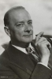

Also known as:Orazi e Curiazi (original title)
Country:Italy, 86 minutes
Spoken languages:
Genres:Adventure, History
Director(s):Terence Young, Ferdinando Baldi
Writer(s):Ennio De Concini, Carlo Lizzani, Giuliano Montaldo
Video Codec:Unknown
Number: 1609


Certification:NR
Storyline:
A Roman nobleman, Horatius leads an imperial legion during the long and bloody war between the Romans and the Albans. A desperate arrangement is agreed on how to settle the war. Three valiant brothers are chosen from each side to fight one last fierce and bloody duel...
Cast: 

Medium: Original DVD,
Comments: Part of: Wrath of the Sword - 20 movie collection
Loaned: No
Aspect ratio: Unknown